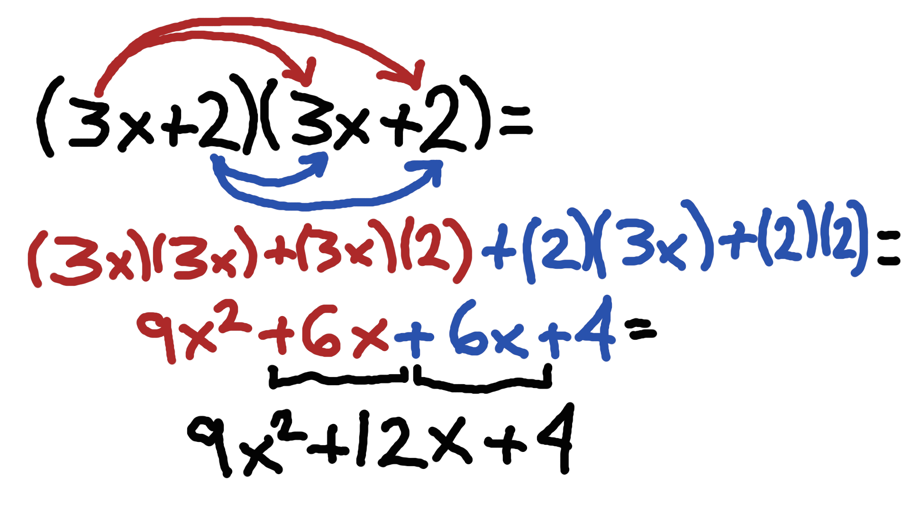
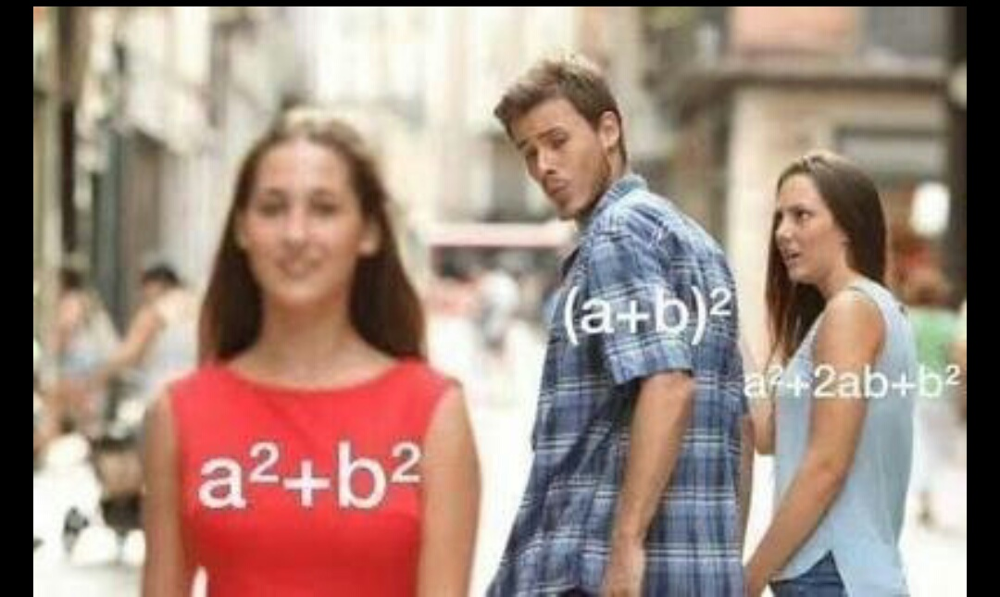
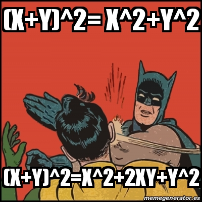
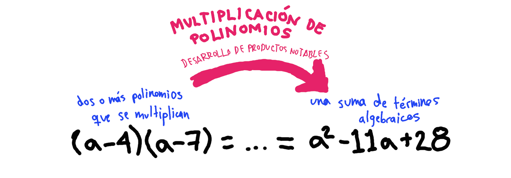
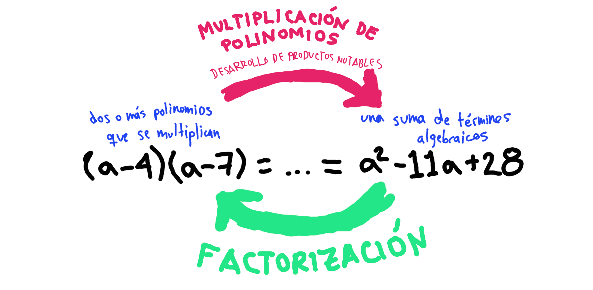

Sesión 5
Productos notables y factorización

En esta sesión vamos a repasar dos temas que seguro vendrán en tu examen: los productos notables y la factorización.
Instrucciones:
Lee todo el contenido de esta página. Tienes que ver los videos en el orden en el que se indican y además debes copiar en tu cuaderno (en la sección que dejaste para matemáticas) todo lo que está dentro de las cajas grises con la siguiente leyenda:
Copiar en cuaderno
Bla bla bla... Tienes que copiarme en tu cuaderno... bla bla bla...
Tienes que ver los videos obligatorioamente ya que ahí es donde se explican los temas y donde se ven los ejemplos. Si solamente copias lo que te pido es posible que no entiendas.
Antes de comenzar esta sesión repasa tus apuntes de las clases pasadas. Debes de tener claros los siguientes temas que ya repsamos:
- suma y resta de polinomios
- multiplicación de polinomios
Productos notables
Recurda que en la multiplicación de polinomios tienes que multiplicar cada uno de los términos de un polinomio por cada uno de los términos del otro polinomio como en el siguiente ejemplo:
Esto puede hacer que la multiplicación de polinomios sea muy tardada... Sin embargo, existen casos particulares en los que el resultado de la multiplicación de polinomios sigue siempre un mismo partón por lo que en lugar de resolver la multiplicación paso por paso podemos solo aplicar una regla y ya. ¡Yey! Estos casos particulares se conocen como productos notables. Para aprender más de ellos ve el siguiente video:
Ahora copia en tu cuaderno lo siguiente que resume lo que acabas de ver en el video.
Copiar en cuaderno
Productos notables
Los productos notables son aquellos productos de algunos polinomios que como siempre cumplen cierto partrón fijo se pueden resolver aplicando ciertas reglas.
| # | Nombre | Producto notable |
|---|---|---|
| 1 | Binomio al cuadrado | \( (a+b)^{2}=a^{2}+2ab+b^{2} \) |
| 2 | Binomio conjudado | \( (a+b)(a-b) = a^{2}-b^{2} \) |
| 3 | Binomio con término común | \( (x+a)(x+b)=x^{2}+(a+b)x+ab \) |
Recodatorio:
Como se explica en el video, no es necesario que te aprendas las reglas de los productos notables de memoria. Si sabes multiplicar polinomios puedes resolver cualquier ejercicio de productos notables. Así que asegurate de saber muy bien como multiplicar polinomios. Sin embargo, los productos notables nos van a servir mucho para factorizar.
Recuerda muy bien nunca equivocarte con los binomios al cuadrado:
 Factorización
Nota que cuando resolvemos una multiplicación de polinomios o cuando resolvemos porductos notables empezamos con dos o más polinomios que se multiplican y terminamos con una suma de términos algebraicos.
El proceso contrario a la multipliación de polinomios, es decir, cuando empezamos con una suma de términos algebraicos y terminamos con una multiplicación de polinomios, se conoce como factorización.
Existen muchos métodos para factorizar. En los siguientes videos aprenderemos sobre algunos de los más importantes.
El primero es por factor común.
Los siguientes tres métodos están relacionados con los productos notables. Para resolverlos solo tienes que identificar los elementos de la expresión y rescribirlo como producto de acuerdo al producto notable que representan.
El primero de estos es la factorización de una diferencia de cuadrados y corresponde al caso contrario de los binomios conjugados.
El segundo es la factorización de los trinomios cuadrados perfectos y corresponde al caso contrario de los binomios al cuadrado.
Finalmente, el tercero es la factorización de los trinomios de la forma \( x^{2}+bx+c \) y corresponde al caso contrario de los binomios con término común.
Ahora copia en tu cuadernon los siguiente que resume lo que acabas de ver.
Copiar en cuaderno
Factorización
La factorización es el porceso algebraico en el que transformamos una suma de términos algebraicos en un producto de monomios y/o polinomios.
Existen varios métodos de factorización:
-
Factor común
Se identifica la literal o literales que comparten todos los términos y se identifica el máximo común divisor (MCD) de los coeficientes.
-
Diferencia de cuadrados
Tiene la forma \( a^{2} - b^{2} \) y su factorización es el producto de binomios conjugados: \( a^{2}+b^{2} = (a+b)(a-b) \).
-
Trinomio cuadrado perfecto
Tiene la forma \( a^{2}+2ab+b^{2} \) y su factorización es el producto de binomios al cuadrado: \( a^{2}+2ab+b^{2} = (a+b)^{2} \).
-
Trinomio de la forma \( x^{2}+cx+d \)
Tiene la forma \( x^{2}+cx+d \) y su factorización es el producto de binomios con término común: \( x^{2}+cx+ab = (x+a)(x+b) \), donde \( c = a+b \) y \( d = ab \) .
Ya terminaste, eso fue todo por esta sesión. Yupi. Vamos a resolver ejercicios.
Instrucciones:
Regresa a Google Classroom y contesta los ejercicios de esta sesión. Y entrega lo que se pide. Puedes poner esta canción mientras haces tus ejericios.